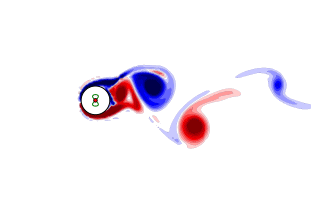

Vortex-induced vibrations
Vortex-induced vibration couples unsteady vortex shedding with structural motion. I study both prescribed-motion cylinder wakes and the in-line and cross-flow response of flexible cylinders, with an interest in how motion and actuation affect the coupled flow–structure response.
This work includes numerical comparisons of two- and three-dimensional wakes and a published study of piezoelectric modulation of flexible-cylinder vibration. Understanding these interactions can inform vibration-control strategies for slender marine structures.
Research question: How do imposed motion and actuation change the vibration response and the surrounding wake?
Oscillating-cylinder wake Hide animationShow animation

Flow and structural response
I use computational fluid dynamics and experiments to study wake evolution, hydrodynamic forces, and vibration.